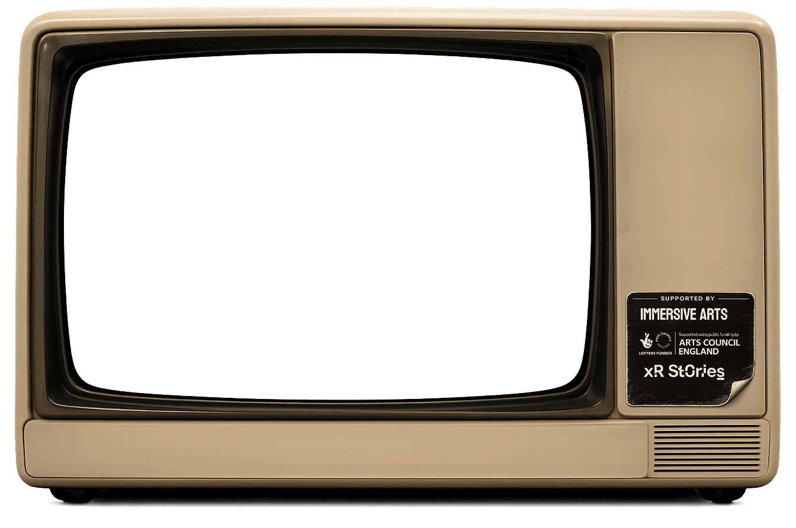
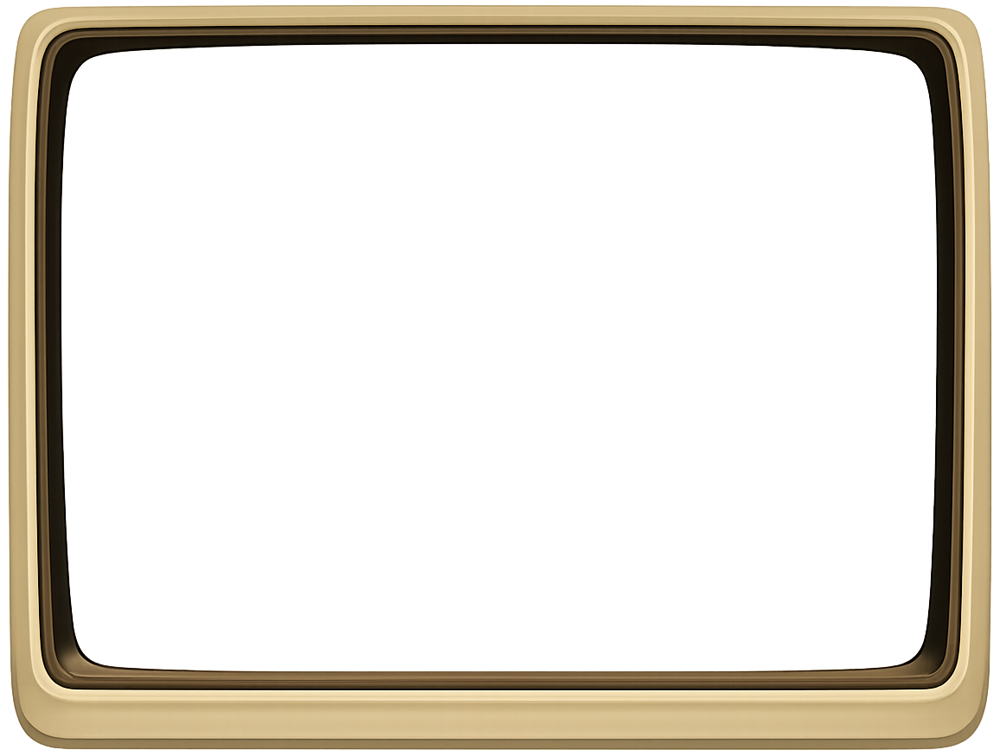

ON AIR SOON
PILOT PREVIEW
Pixel Puppets is a new format of interactive theatre, in development since 2024. Live performers drive digital characters in real time on a cinema-scale screen, while the audience actively shapes what happens next. The work sits at the intersection of theatre, cinema and live gaming — designed for auditorium audiences, with no headsets or VR equipment required. We sometimes call it extended reality theatre, but the audience experience is closer to a really alive cinema show.
We're a Yorkshire-based theatre company, working across Sheffield (South Yorkshire) and Holmfirth (West Yorkshire) in the United Kingdom. In funded research and development, with support from the BFI Immersive Fiction Lab, Arts Council England, and Immersive Arts UK.
Pixel Puppets is a live comedy performance where digital characters are puppeteered in real time, turning a cinema screen into a strange, reactive playground. Costumed performers appear in front of the screen, using game controllers, live voice and facial tracking to bring animated characters to life as the audience watches. The result sits somewhere between theatre, video game, live stream and Saturday morning TV, with the room actively shaping what happens next.
Currently in funded R&D. Building the show piece by piece — story, hardware, engine, latency — and seeing what lands. The current target is a 20-minute vertical slice as proof of concept.
Get in touch: hello@pixelpuppets.co.
We're talking to venues, festivals, programmers and funders interested in live interactive performance, immersive theatre, digital theatre, extended reality theatre, and new theatre formats that sit between stage, cinema and gaming.
The home channel plays a silent looping video showing research and development inside Unreal Engine. The shot opens on a house in the countryside looking out at a city in the distance. A first-person view shows the player walking up to and entering a car, then driving from the countryside into the city — demonstrating an open-world get-into-a-car-and-drive dynamic. As the player arrives, the lighting state shifts from bright daylight to a darker night-time city full of neon. The drive then continues back out of the city to the countryside. Throughout, the world has the warm, friendly, brightly-lit aesthetic of children's TV, with the city's neon-noir contrasting against the gentle countryside. This is in-engine R&D footage, not finished show content.


Live digital puppet shows by artistic director Ben Carlin and producer Joe Duggan,
blending storytelling, technology and audience interaction.
© 2026 Pixel Puppets · Made in the UK